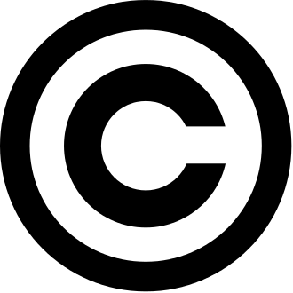
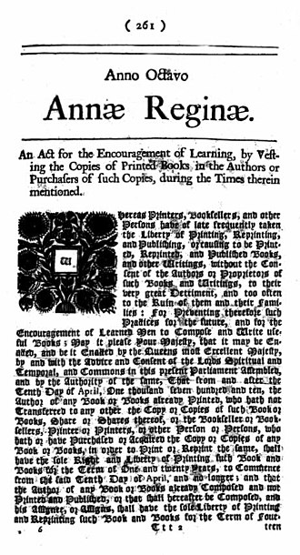

Copyright and Authority

A copyright is a type of intellectual property that gives its owner the exclusive right to copy, distribute, adapt, display, and perform a creative work, usually for a limited time.[1][2][3][4][5] The creative work may be in a literary, artistic, educational, or musical form. Copyright is intended to protect the original expression of an idea in the form of a creative work, but not the idea itself.[6][7][8] A copyright is subject to limitations based on public interest considerations, such as the fair use doctrine in the United States.
Some jurisdictions require "fixing" copyrighted works in a tangible form. It is often shared among multiple authors, each of whom holds a set of rights to use or license the work, and who are commonly referred to as rights holders.[9][10][11][12][13][better source needed] These rights frequently include reproduction, control over derivative works, distribution, public performance, and moral rights such as attribution.[14]
Copyrights can be granted by public law and are in that case considered "territorial rights". This means that copyrights granted by the law of a certain state, do not extend beyond the territory of that specific jurisdiction. Copyrights of this type vary by country; many countries, and sometimes a large group of countries, have made agreements with other countries on procedures applicable when works "cross" national borders or national rights are inconsistent.[15]
Typically, the public law duration of a copyright expires 50 to 100 years after the creator dies, depending on the jurisdiction. Some countries require certain copyright formalities[5] to establishing copyright, others recognize copyright in any completed work, without a formal registration. When the copyright of a work expires, it enters the public domain.
National copyrights
Often seen as the first real copyright law, the 1709 British Statute of Anne gave the publishers rights for a fixed period, after which the copyright expired.[23] The act also alluded to individual rights of the artist. It began, "Whereas Printers, Booksellers, and other Persons, have of late frequently taken the Liberty of Printing ... Books, and other Writings, without the Consent of the Authors ... to their very great Detriment, and too often to the Ruin of them and their Families:".[24] A right to benefit financially from the work is articulated, and court rulings and legislation have recognized a right to control the work, such as ensuring that the integrity of it is preserved. An irrevocable right to be recognized as the work's creator appears in some countries' copyright laws.

The Copyright Clause of the United States, Constitution (1787) authorized copyright legislation: "To promote the Progress of Science and useful Arts, by securing for limited Times to Authors and Inventors the exclusive Right to their respective Writings and Discoveries." That is, by guaranteeing them a period of time in which they alone could profit from their works, they would be enabled and encouraged to invest the time required to create them, and this would be good for society as a whole. A right to profit from the work has been the philosophical underpinning for much legislation extending the duration of copyright, to the life of the creator and beyond, to their heirs.
The original length of copyright in the United States was 14 years, and it had to be explicitly applied for. If the author wished, they could apply for a second 14‑year monopoly grant, but after that the work entered the public domain, so it could be used and built upon by others.
Copyright law was enacted rather late in German states, and the historian Eckhard Höffner argues that the absence of copyright laws in the early 19th century encouraged publishing, was profitable for authors, led to a proliferation of books, enhanced knowledge, and was ultimately an important factor in the ascendency of Germany as a power during that century.[25] However, empirical evidence derived from the exogenous differential introduction of copyright in Napoleonic Italy shows that "basic copyrights increased both the number and the quality of operas, measured by their popularity and durability".[26]
Ownership
The original holder of the copyright may be the employer of the author rather than the author themself if the work is a "work for hire".[33][34] For example, in English law the Copyright, Designs and Patents Act 1988 provides that if a copyrighted work is made by an employee in the course of that employment, the copyright is automatically owned by the employer which would be a "Work for Hire". Typically, the first owner of a copyright is the person who created the work i.e. the author.[35] But when more than one person creates the work, then a case of joint authorship can be made provided some criteria are met.
Eligible works
Copyright may apply to a wide range of creative, intellectual, or artistic forms, or "works". Specifics vary by jurisdiction, but these can include poems, theses, fictional characters, plays and other literary works, motion pictures, choreography, musical compositions, sound recordings, paintings, drawings, sculptures, photographs, computer software, radio and television broadcasts, and industrial designs. Graphic designs and industrial designs may have separate or overlapping laws applied to them in some jurisdictions.[36][37]
Copyright does not cover ideas and information themselves, only the form or manner in which they are expressed.[38] For example, the copyright to a Mickey Mouse cartoon restricts others from making copies of the cartoon or creating derivative works based on Disney's particular anthropomorphic mouse, but does not prohibit the creation of other works about anthropomorphic mice in general, so long as they are different enough to not be judged copies of Disney's.[38] Note additionally that Mickey Mouse is not copyrighted because characters cannot be copyrighted; rather, Steamboat Willie is copyrighted and Mickey Mouse, as a character in that copyrighted work, is afforded protection.
Originality
Main article: Threshold of originality
Typically, a work must meet minimal standards of originality in order to qualify for copyright, and the copyright expires after a set period of time (some jurisdictions may allow this to be extended). Different countries impose different tests, although generally the requirements are low; in the United Kingdom there has to be some "skill, labour, and judgment" that has gone into it.[39] In Australia and the United Kingdom it has been held that a single word is insufficient to comprise a copyright work. However, single words or a short string of words can sometimes be registered as a trademark instead.
Copyright law recognizes the right of an author based on whether the work actually is an original creation, rather than based on whether it is unique; two authors may own copyright on two substantially identical works, if it is determined that the duplication was coincidental, and neither was copied from the other.
Registration
Main article: Copyright registration
In all countries where the Berne Convention standards apply, copyright is automatic, and need not be obtained through official registration with any government office. Once an idea has been reduced to tangible form, for example by securing it in a fixed medium (such as a drawing, sheet music, photograph, a videotape, or a computer file), the copyright holder is entitled to enforce their exclusive rights.[27] However, while registration is not needed to exercise copyright, in jurisdictions where the laws provide for registration, it serves as prima facie evidence of a valid copyright and enables the copyright holder to seek statutory damages and attorney's fees.[40] (In the US, registering after an infringement only enables one to receive actual damages and lost profits.)
A widely circulated strategy to avoid the cost of copyright registration is referred to as the poor man's copyright. It proposes that the creator send the work to themself in a sealed envelope by registered mail, using the postmark to establish the date. This technique has not been recognized in any published opinions of the United States courts. The United States Copyright Office says the technique is not a substitute for actual registration.[41] The United Kingdom Intellectual Property Office discusses the technique and notes that the technique (as well as commercial registries) does not constitute dispositive proof that the work is original or establish who created the work.[42][43]
Fixing
The Berne Convention allows member countries to decide whether creative works must be "fixed" to enjoy copyright. Article 2, Section 2 of the Berne Convention states: "It shall be a matter for legislation in the countries of the Union to prescribe that works in general or any specified categories of works shall not be protected unless they have been fixed in some material form." Some countries do not require that a work be produced in a particular form to obtain copyright protection. For instance, Spain, France, and Australia do not require fixation for copyright protection. The United States and Canada, on the other hand, require that most works must be "fixed in a tangible medium of expression" to obtain copyright protection.[44] US law requires that the fixation be stable and permanent enough to be "perceived, reproduced or communicated for a period of more than transitory duration". Similarly, Canadian courts consider fixation to require that the work be "expressed to some extent at least in some material form, capable of identification and having a more or less permanent endurance".[44]
Note this provision of US law: c) Effect of Berne Convention.—No right or interest in a work eligible for protection under this title may be claimed by virtue of, or in reliance upon, the provisions of the Berne Convention, or the adherence of the United States thereto. Any rights in a work eligible for protection under this title that derive from this title, other Federal or State statutes, or the common law, shall not be expanded or reduced by virtue of, or in reliance upon, the provisions of the Berne Convention, or the adherence of the United States thereto.[45]